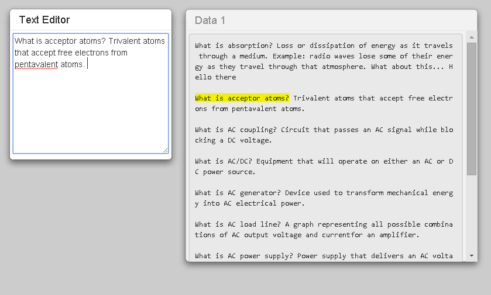
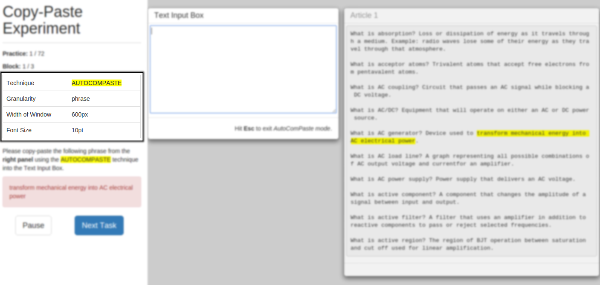
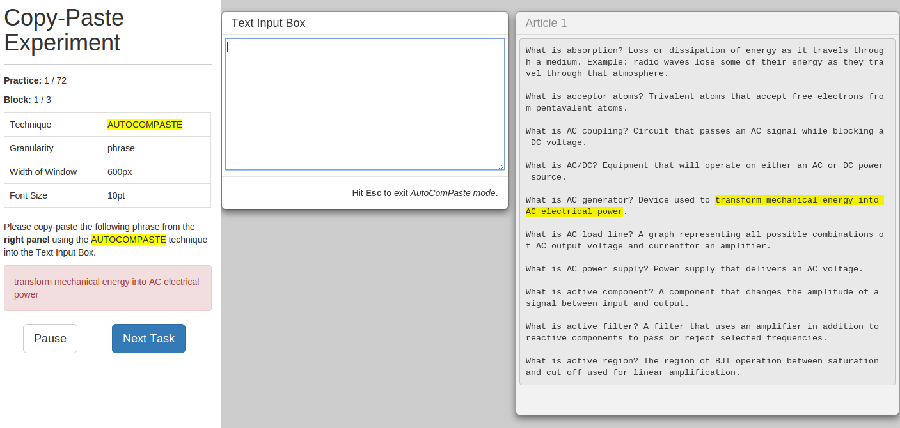
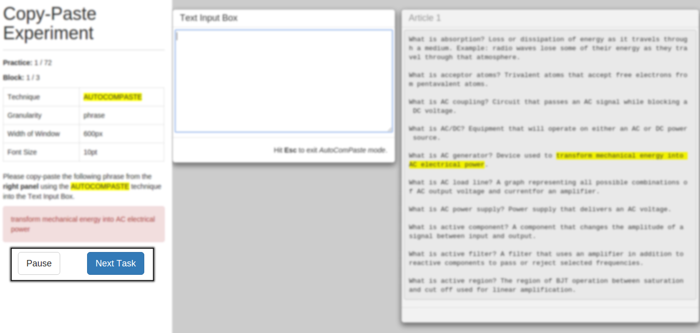

Dear participant , please read the instructions below carefully before proceeding to the experiment.
At any point in time, please feel free to stop the experiment to ask questions if you are unsure of your given tasks.
Using AutoComPaste
Whenever AutoComPaste is active, typing three characters or more in the Text Input Box will bring up a dropdown list of possible sentences that are extracted from the contents of the open windows.
When this happens, pressing the ⇧/⇩ buttons will scroll through the list of suggestions. Press Enter to select a suggestion to be pasted into the Text Input Box.
After selecting a sentence, pressing the ⇦/⇨ buttons will allow you to delete or append the sentences before or after the selected sentence.
If you wish to use the arrow keys to navigate your cursor through your text, press the Esc button to exit the AutoComPaste mode.
Task required
You will be given a series of tasks requiring you to try out one of the 2 different techniques of copying and pasting highlighted text onto a given text box at one time.
STEP 1: Verify from the left panel which method (AutoComPaste or Ctrl-C + Ctrl-V) you are expected to use for the current task.
STEP 2: Locate the highlighted section(s) of text from the right panel.
STEP 3: Copy-and-paste the highlighted text into the Text Input Box provided.
STEP 4: Once you’re satisfied with the text entered in the Text Input Box, clicking on the Next Task button will bring up the next task. You may take breaks at any time during the experiment by clicking on the Pause button to stop the timer.
Once you've completed all the tasks, you'll be re-directed to answer a post-experiment questionnaire.
You may now proceed to try out some of the practice examples in the proceeding section.